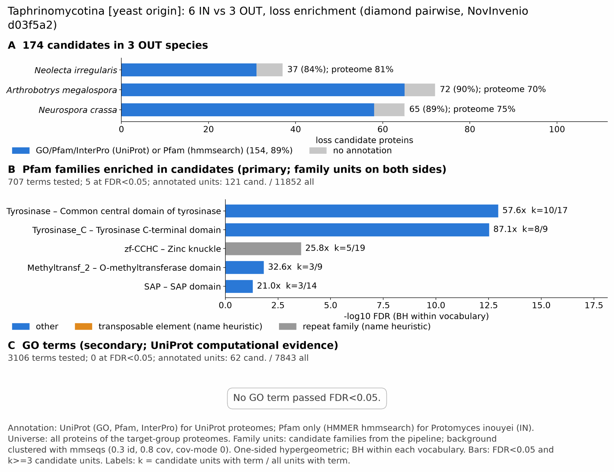

yc taphrinomycotina: functional enrichment (loss)
One-sided hypergeometric test per term; Benjamini-Hochberg FDR within each scope, level and vocabulary. Candidates are the loss candidates: gene families present in the OUT group and absent from the IN group. Universe: proteome. Background clustered: True (26974 sequences in 19854 clusters, mmseqs easy-cluster --min-seq-id 0.3 -c 0.8). Family level: one unit per candidate family and per background cluster.
Sources: Pfam: 2026-01-27-Pfam38.2; InterPro entries: 110.0; GO: releases/2026-07-26; analysis generated 2026-10-24T14:30:08. Source tables: /bigdata/stajichlab/jstajich/projects/NovInvenio_Investigations/studies/fungi/yeast_convergence/yc_taphrinomycotina/analysis/enrichment/outputs/loss/proteome_clustered.
Full record: PROVENANCE. Run report: report.html.
- Annotation provenance is not fully recorded: PROVENANCE.yaml lists the per-species annotation files and their checksums, but not the UniProt release they come from.
- GO results are secondary. GO annotations include computational evidence (IEA, IBA); the GO evidence column shows if a term has non-IEA support.
- Candidate families (pipeline clustering of candidates) and background clusters (mmseqs clustering of the background proteome) are made by different runs, so family-level counts are not fully comparable.
- Low annotation: the candidate set has less than 50% annotation for GO 37.4%. Enrichment for these vocabularies has low power.
- GO covers only 2 of 3 species: Nirr, Ncra. No GO annotation for Amega; this species adds no units to the GO tests, so those results describe the covered species only.
Summary figure

Annotation coverage
Fraction of proteins with at least one term per vocabulary. Universe = all proteins of the species; candidates = the candidate set.
| Species | Set | Proteins | Pfam | Pfam clan | InterPro | GO | Any |
|---|---|---|---|---|---|---|---|
| Nirr | universe | 5530 | 76.0% | 60.9% | 80.6% | 72.0% | 80.9% |
| Nirr | candidates | 37 | 73.0% | 67.6% | 83.8% | 48.6% | 83.8% |
| Amega | universe | 11859 | 63.1% | 51.0% | 69.7% | 0.0% | 69.8% |
| Amega | candidates | 72 | 83.3% | 63.9% | 88.9% | 0.0% | 90.3% |
| Ncra | universe | 9759 | 69.3% | 54.9% | 73.9% | 62.6% | 74.6% |
| Ncra | candidates | 65 | 81.5% | 66.1% | 87.7% | 72.3% | 89.2% |
| ALL_OUT | universe | 27148 | 68.0% | 54.4% | 73.5% | 37.2% | 73.8% |
| ALL_OUT | candidates | 174 | 80.5% | 65.5% | 87.4% | 37.4% | 88.5% |
Tests summary
Per vocabulary: terms with FDR < 0.05 / terms tested. Protein level counts proteins; family level counts candidate families and background clusters.
| Scope | Level | Cand. units | Pfam sig / tested | Pfam clan sig / tested | InterPro sig / tested | GO sig / tested |
|---|---|---|---|---|---|---|
| whole_set | family | 151 | 5 / 707 | 3 / 322 | 13 / 1603 | 0 / 3106 |
| whole_set | protein | 174 | 9 / 1343 | 5 / 391 | 20 / 2944 | 0 / 3612 |
| Amega | family | 68 | 2 / 311 | 1 / 235 | 5 / 796 | 0 / 0 (not_available_no_annotated_units) |
| Amega | protein | 72 | 2 / 380 | 1 / 243 | 4 / 936 | 0 / 0 (not_available_no_annotated_units) |
| Ncra | family | 64 | 1 / 304 | 1 / 240 | 3 / 768 | 0 / 2534 |
| Ncra | protein | 65 | 1 / 367 | 1 / 246 | 3 / 908 | 0 / 2632 |
| Nirr | family | 34 | 0 / 171 | 0 / 178 | 0 / 503 | 0 / 2195 |
| Nirr | protein | 37 | 1 / 195 | 0 / 181 | 1 / 560 | 0 / 2247 |
Top 25 Pfam terms (whole set, family level)
25 rows shown, ordered by FDR then p-value; 5 have FDR < 0.05 (bold).
| Term | Name | k / N cand. | n / M bg | Fold | FDR (BH) |
|---|---|---|---|---|---|
| PF00264 | Tyrosinase: Common central domain of tyrosinase | 10 / 121 | 17 / 11852 | 57.618 | 1.09e-13 |
| PF18132 | Tyrosinase_C: Tyrosinase C-terminal domain | 8 / 121 | 9 / 11852 | 87.067 | 2.95e-13 |
| PF00098 | zf-CCHC: Zinc knuckle | 5 / 121 | 19 / 11852 | 25.776 | 2.49e-04 |
| PF00891 | Methyltransf_2: O-methyltransferase domain | 3 / 121 | 9 / 11852 | 32.65 | 0.015 |
| PF02037 | SAP: SAP domain | 3 / 121 | 14 / 11852 | 20.989 | 0.049 |
| PF04749 | PLAC8: PLAC8 family | 2 / 121 | 5 / 11852 | 39.18 | 0.119 |
| PF01112 | Asparaginase_2: Asparaginase | 2 / 121 | 6 / 11852 | 32.65 | 0.133 |
| PF15456 | Uds1: Up-regulated During Septation | 2 / 121 | 6 / 11852 | 32.65 | 0.133 |
| PF14604 | SH3_9: Variant SH3 domain | 2 / 121 | 9 / 11852 | 21.767 | 0.279 |
| PF05183 | RdRP: RNA dependent RNA polymerase | 2 / 121 | 10 / 11852 | 19.59 | 0.312 |
| PF00789 | UBX: UBX domain | 2 / 121 | 11 / 11852 | 17.809 | 0.344 |
| PF01476 | LysM: LysM domain | 2 / 121 | 13 / 11852 | 15.069 | 0.441 |
| PF01370 | Epimerase: NAD dependent epimerase/dehydratase family | 2 / 121 | 16 / 11852 | 12.244 | 0.614 |
| PF00170 | bZIP_1: bZIP transcription factor | 2 / 121 | 18 / 11852 | 10.883 | 0.670 |
| PF01636 | APH: Phosphotransferase enzyme family | 2 / 121 | 18 / 11852 | 10.883 | 0.670 |
| PF00704 | Glyco_hydro_18: Glycosyl hydrolases family 18 | 2 / 121 | 21 / 11852 | 9.329 | 0.845 |
| PF00735 | Septin: Septin | 1 / 121 | 5 / 11852 | 19.59 | 1.000 |
| PF01915 | Glyco_hydro_3_C: Glycosyl hydrolase family 3 C-terminal domain | 1 / 121 | 5 / 11852 | 19.59 | 1.000 |
| PF04969 | CS: CS domain | 1 / 121 | 5 / 11852 | 19.59 | 1.000 |
| PF12273 | Rcr1-2: Rcr1/2 | 1 / 121 | 5 / 11852 | 19.59 | 1.000 |
| PF14310 | Fn3-like: Fibronectin type III-like domain | 1 / 121 | 5 / 11852 | 19.59 | 1.000 |
| PF02558 | ApbA: Ketopantoate reductase PanE/ApbA | 1 / 121 | 6 / 11852 | 16.325 | 1.000 |
| PF02582 | DUF155: RMND1/Sif2-Sif3/Mrx10, DUF155 | 1 / 121 | 6 / 11852 | 16.325 | 1.000 |
| PF08546 | ApbA_C: Ketopantoate reductase PanE/ApbA C terminal | 1 / 121 | 6 / 11852 | 16.325 | 1.000 |
| PF10433 | Beta-prop_RSE1_1st: RSE1/DDB1/CPSF1 first beta-propeller | 1 / 121 | 6 / 11852 | 16.325 | 1.000 |
Top 25 InterPro terms (whole set, family level)
25 rows shown, ordered by FDR then p-value; 13 have FDR < 0.05 (bold).
| Term | Name | k / N cand. | n / M bg | Fold | FDR (BH) |
|---|---|---|---|---|---|
| IPR002227 | Domain:Tyrosinase copper-binding domain | 10 / 131 | 17 / 13126 | 58.94 | 6.78e-14 |
| IPR008922 | Homologous_superfamily:Di-copper centre-containing domain superfamily | 10 / 131 | 17 / 13126 | 58.94 | 6.78e-14 |
| IPR050316 | Family:Tyrosinase-like | 10 / 131 | 17 / 13126 | 58.94 | 6.78e-14 |
| IPR041640 | Domain:Tyrosinase, C-terminal | 8 / 131 | 9 / 13126 | 89.065 | 2.84e-13 |
| IPR051714 | Family:CCHC-type Zinc Finger Nucleic Acid Binding | 5 / 131 | 6 / 13126 | 83.499 | 1.75e-07 |
| IPR036875 | Homologous_superfamily:Zinc finger, CCHC-type superfamily | 5 / 131 | 26 / 13126 | 19.269 | 0.001 |
| IPR001878 | Domain:Zinc finger, CCHC-type | 5 / 131 | 30 / 13126 | 16.7 | 0.002 |
| IPR001077 | Domain:O-methyltransferase, C-terminal domain | 3 / 131 | 9 / 13126 | 33.399 | 0.014 |
| IPR016461 | Family:O-methyltransferase-like | 3 / 131 | 9 / 13126 | 33.399 | 0.014 |
| IPR036779 | Homologous_superfamily:LysM domain superfamily | 4 / 131 | 25 / 13126 | 16.032 | 0.016 |
| IPR001025 | Domain:Bromo adjacent homology (BAH) domain | 3 / 131 | 11 / 13126 | 27.327 | 0.022 |
| IPR043151 | Homologous_superfamily:Bromo adjacent homology (BAH) domain superfamily | 3 / 131 | 12 / 13126 | 25.05 | 0.027 |
| IPR036361 | Homologous_superfamily:SAP domain superfamily | 3 / 131 | 14 / 13126 | 21.471 | 0.040 |
| IPR003034 | Domain:SAP domain | 3 / 131 | 16 / 13126 | 18.787 | 0.057 |
| IPR006461 | Family:PLAC8 motif-containing protein | 2 / 131 | 5 / 13126 | 40.079 | 0.104 |
| IPR000246 | Family:Peptidase T2, asparaginase 2 | 2 / 131 | 6 / 13126 | 33.399 | 0.129 |
| IPR026749 | Family:Transmembrane protein 135 | 2 / 131 | 6 / 13126 | 33.399 | 0.129 |
| IPR029191 | Domain:Up-regulated during septation protein 1 | 2 / 131 | 6 / 13126 | 33.399 | 0.129 |
| IPR043129 | Homologous_superfamily:ATPase, nucleotide binding domain | 4 / 131 | 53 / 13126 | 7.562 | 0.160 |
| IPR029063 | Homologous_superfamily:S-adenosyl-L-methionine-dependent methyltransferase superfamily | 7 / 131 | 193 / 13126 | 3.634 | 0.257 |
| IPR007855 | Family:RNA-dependent RNA polymerase | 2 / 131 | 10 / 13126 | 20.04 | 0.308 |
| IPR057596 | Domain:RDRP, core domain | 2 / 131 | 10 / 13126 | 20.04 | 0.308 |
| IPR001012 | Domain:UBX domain | 2 / 131 | 11 / 13126 | 18.218 | 0.357 |
| IPR011583 | Domain:Chitinase II/V-like, catalytic domain | 2 / 131 | 12 / 13126 | 16.7 | 0.377 |
| IPR029070 | Homologous_superfamily:Chitinase insertion domain superfamily | 2 / 131 | 12 / 13126 | 16.7 | 0.377 |
Top 15 GO terms (whole set, family level) — secondary, computational evidence (IEA/IBA) included
15 rows shown, ordered by FDR then p-value; 0 have FDR < 0.05 (bold).
| Term | Name | k / N cand. | n / M bg | Fold | FDR (BH) | GO evidence | Families with non-IEA |
|---|---|---|---|---|---|---|---|
| GO:0045727 | biological_process:positive regulation of translation | 3 / 62 | 18 / 7843 | 21.083 | 0.470 | has_non_IEA | 3 |
| GO:0031124 | biological_process:mRNA 3'-end processing | 3 / 62 | 19 / 7843 | 19.974 | 0.470 | has_non_IEA | 1 |
| GO:0005849 | cellular_component:mRNA cleavage factor complex | 3 / 62 | 21 / 7843 | 18.071 | 0.470 | has_non_IEA | 2 |
| GO:0016716 | molecular_function:oxidoreductase activity, acting on paired donors, with incorporation or reduction of molecular oxygen, another compound as one donor, and incorporation of one atom of oxygen | 2 / 62 | 5 / 7843 | 50.6 | 0.470 | IEA_only | 0 |
| GO:0045182 | molecular_function:translation regulator activity | 2 / 62 | 6 / 7843 | 42.167 | 0.561 | has_non_IEA | 2 |
| GO:0051247 | biological_process:positive regulation of protein metabolic process | 3 / 62 | 29 / 7843 | 13.086 | 0.741 | has_non_IEA | 3 |
| GO:0170044 | biological_process:non-proteinogenic amino acid catabolic process | 2 / 62 | 8 / 7843 | 31.625 | 0.741 | has_non_IEA | 1 |
| GO:2000765 | biological_process:regulation of cytoplasmic translation | 2 / 62 | 10 / 7843 | 25.3 | 1.000 | has_non_IEA | 2 |
| GO:0044273 | biological_process:sulfur compound catabolic process | 2 / 62 | 12 / 7843 | 21.083 | 1.000 | has_non_IEA | 1 |
| GO:0010628 | biological_process:positive regulation of gene expression | 3 / 62 | 41 / 7843 | 9.256 | 1.000 | has_non_IEA | 3 |
| GO:0003729 | molecular_function:mRNA binding | 5 / 62 | 140 / 7843 | 4.518 | 1.000 | has_non_IEA | 4 |
| GO:0004177 | molecular_function:aminopeptidase activity | 2 / 62 | 17 / 7843 | 14.882 | 1.000 | has_non_IEA | 1 |
| GO:0008017 | molecular_function:microtubule binding | 3 / 62 | 53 / 7843 | 7.16 | 1.000 | has_non_IEA | 1 |
| GO:0050667 | biological_process:homocysteine metabolic process | 2 / 62 | 18 / 7843 | 14.056 | 1.000 | has_non_IEA | 1 |
| GO:0008171 | molecular_function:O-methyltransferase activity | 2 / 62 | 20 / 7843 | 12.65 | 1.000 | IEA_only | 0 |
Actin cytoskeleton controls
Known actin-related families and how many of their proteins pass each filter. Protein ID columns are left out.
| control | pfam_ids | desc_regex | OUT_universe | OUT_in_matrix | OUT_pass_outgroup_rule | candidates | near_miss_in1 | near_miss_in2 | n_Nirr | n_Amega | n_Ncra | n_Spom | n_Schiocto | n_Schijapo | n_Saitcomp | n_Taphdefo | n_Protinou |
|---|---|---|---|---|---|---|---|---|---|---|---|---|---|---|---|---|---|
| Arp2/3 ARPC2 (P34-Arc) | PF04045 | 3 | 3 | 3 | 0 | 0 | 0 | 1 | 1 | 1 | 1 | 1 | 1 | 1 | 1 | 1 | |
| Arp2/3 ARPC3 (P21-Arc) | PF04062 | 2 | 2 | 0 | 0 | 0 | 0 | 0 | 1 | 1 | 1 | 1 | 1 | 1 | 1 | 1 | |
| Arp2/3 ARPC4 | PF05856 | 3 | 3 | 3 | 0 | 0 | 0 | 1 | 1 | 1 | 1 | 1 | 1 | 1 | 1 | 1 | |
| Arp2/3 ARPC5 (P16-Arc) | PF04699 | 3 | 3 | 3 | 0 | 0 | 0 | 1 | 1 | 1 | 1 | 1 | 1 | 1 | 0 | 1 | |
| Arp2/3 ARPC1 (description only) | arp2/3 complex.*(41|p41|subunit 1)|ARPC1 | 1 | 1 | 1 | 0 | 0 | 0 | 1 | 0 | 0 | 0 | 0 | 0 | 0 | 0 | 0 | |
| Arp2 / Arp3 (description only) | actin-related protein (2|3)\b|\bARP[23]\b | 19 | 19 | 17 | 0 | 0 | 0 | 6 | 7 | 6 | 7 | 7 | 7 | 5 | 6 | 0 | |
| WAVE complex NCKAP1 | PF09735 | 0 | 0 | 0 | 0 | 0 | 0 | 0 | 0 | 0 | 0 | 0 | 0 | 0 | 0 | 0 | |
| WAVE complex CYFIP (FragX_IP) | PF05994 | 0 | 0 | 0 | 0 | 0 | 0 | 0 | 0 | 0 | 0 | 0 | 0 | 0 | 0 | 0 | |
| WAVE complex ABI | PF07815|PF27594 | 0 | 0 | 0 | 0 | 0 | 0 | 0 | 0 | 0 | 0 | 0 | 0 | 0 | 0 | 0 | |
| SCAR/WAVE (SCAR_helical) | PF27569 | 0 | 0 | 0 | 0 | 0 | 0 | 0 | 0 | 0 | 0 | 0 | 0 | 0 | 0 | 0 | |
| WASP family (WH1) | PF00568 | 4 | 4 | 4 | 0 | 0 | 0 | 1 | 2 | 1 | 1 | 1 | 1 | 1 | 1 | 1 | |
| WH2 motif (WASP, WAVE, others) | PF02205 | 5 | 5 | 3 | 0 | 0 | 0 | 2 | 2 | 1 | 2 | 2 | 2 | 2 | 3 | 3 | |
| Formin FH2 | PF02181 | 3 | 3 | 3 | 0 | 0 | 0 | 1 | 1 | 1 | 3 | 3 | 3 | 2 | 1 | 2 | |
| Formin Drf_GBD / Drf_FH3 / Drf_DAD | PF06371|PF06367|PF06345 | 5 | 5 | 5 | 0 | 0 | 0 | 2 | 1 | 2 | 4 | 4 | 4 | 3 | 2 | 2 | |
| Ena/VASP (VASP_tetra) | PF08776 | 0 | 0 | 0 | 0 | 0 | 0 | 0 | 0 | 0 | 0 | 0 | 0 | 0 | 0 | 0 | |
| Coronin (description only) | coronin | 3 | 3 | 3 | 0 | 0 | 0 | 1 | 1 | 1 | 1 | 1 | 1 | 1 | 0 | 0 | |
| Cortactin (HS1_rep) | PF02218 | 0 | 0 | 0 | 0 | 0 | 0 | 0 | 0 | 0 | 0 | 0 | 0 | 0 | 0 | 0 | |
| Myosin 2 tail (Myosin_tail_1) | PF01576 | 1 | 1 | 1 | 0 | 0 | 0 | 0 | 1 | 0 | 0 | 0 | 0 | 0 | 0 | 0 | |
| Myosin head (all myosins) | PF00063 | 13 | 13 | 13 | 0 | 0 | 0 | 5 | 4 | 4 | 5 | 5 | 5 | 3 | 3 | 4 |
Page written by bin/generate_enrichment_page.py.